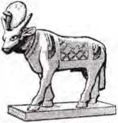
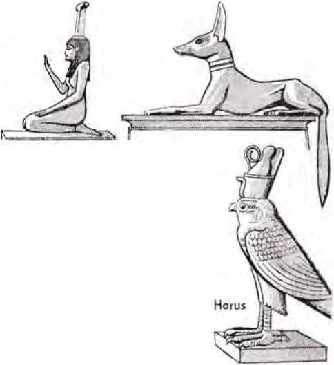
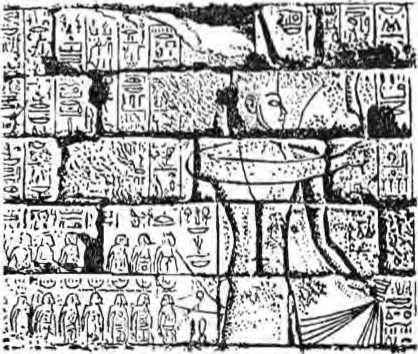
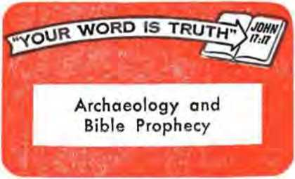

Ta-weret
THE REASON FOR THIS MAGAZINE
News sources that are able to keep you awake to the vital issues of our times must be unfettered by censorship and selfish interesls. “Awake!” has no fetters. I) recognizes facts, faces facts, is free to publish facts. If is not bound by political ties; it is unhampered by traditional creeds. This magazine keeps itself free, that it may speak freely to you. But it does not abuse its freedom. It maintains integrity to truth.
The viewpoint of "Awake!” is not narrow, but is international. "Awake!” has its own correspondents in scores of nations. Its articles are read in many lands, in many languages, by millions of persons.
In every issue "Awake!" presents vital topics on which you should be informed. It features penetrating articles on social conditions and offers sound counsel for meeting the problems of everyday life. Current news from every continent passes in quick review. Attention is focused on activities in the fields of government and commerce about which you should know. Straightforward discussions of religious issues alert you to matters of vital concern. Customs and people in many lands, the marvels of creation, practical sciences and points of human interest are al! embraced in its coverage. “Awake!" provides wholesome, instructive reading for every member of the family.
"Awake!” pledges itself to righteous principles, to exposing hidden foes and subtle dangers, to championing freedom for all, to comforting mourners and strengthening those disheartened by the failures of a delinquent world, reflecting sure hope for the establishment of God's righteous new order in this generation.
Get acquainted with “Awake!" Keep awake by reading "Awake!"
:.i> — —‘.ii :tii—ri
Published Semimonthly lv
WATCHTOW ER BIBLE AND TRACT SOCIETY or NSW YORK, INC. 117 Adams StTvi.l Brooklyn, N.Y. 11201. U.S.A.
N. H. Knorr, Fretridcit< Grant Suiter, Secretary
Average printing each issue: 4,600,000 Five cents a copy
Vrirlv nitenlplfon rate*
ter MDictonilUy editfmr4
America, U.S., 117 Ab;.r - ♦ kin . 5 Y. 11201 11
Australia, 11 Jhm'ord Ihl . ©tn -W, N.ti.W.
Canada, 150 BrliljHivt 1 Au., T-iute IF', Ont
England. Watch Tot er Heu;
N»w Zealand, Xnrtti Bl., A'-’ ’and S W 3
Swth Africa, Private Baj HO *' '-Jjf TfL *0e
(Wontbly Mfltloris cost half lire above files.) Remittances for sijbr’nfllloii, hJioiiM 'i"“ h io the n-ITke !n yw countly. 0sher”L*i <n.J y^ur Kmitrw" in Briwklyn. Notlcw ®T raplratfofi to wol t*t kj 4 Litter*
t.Utesiripilfiij expires.
Now published in 26 languages Semimonthly—Afrilsasns. Cebuano, Panish, Dutch, EwUstu Finnish, French, Ucrntan, Greek, lloko. Itellnn, Japanese, Korean, Norwetflan. f'ortiwse, Spanish, Swedish, TwU&iL Zulu.
Monthly— Chhirnd, CInyanJi. WlUgaynon, Malayalam. Polish, T.ittiI i „ ini.-'.
CHANGES OF ADDRESS should reach us thirty day? batexe your movlnyi date. Give uy yo'ir old and new address {if imslblc. your old address label), Write Watchtower. 117 Adan’s Street. Bwklytt. New York 11201. U.S.A.
Secoml-rliA:-® lu^ FMtd at ftA-
Prlnted in U.S.A.
The Bible translation rcgvliirly need In Awake:” fc the New World Ttairelalton of th* Holy Strlirturc!, 1961 cdltbn. When other translations are treed. this Is clearly marked.
CONTENTS
The Bible as History Under Attack! 3 The Spade Sheds Light on Genesis 4 Israel’s Worship—A Divine Revelation S Ancient Ruins Testify to Incidents in
Discovering God’s Name and Word in
When Sacred and Secular Historians
Disagree—Whom Do the
Faith Still Needed—“Let God
"Your Word Is Truth” Archaeology and Bible Prophecy 28
Watching the World
30
Number 19
Brooklyn, N.Y., October fl, 1967
Volume XLVIII
WHAT a book the Bible is! Oldest of the books being read today, it is at once the most widely quoted and distributed as well as the most widely translated— in 1,280 languages. No other book has so many genuine friends nor so many determined enemies.
Without doubt one reason for the Bible’s great popularity lies in its being such fine literature. But to limit your appreciation of the Bible to that fact would be to make a serious mistake. It commands your attention because of its claim to be the inspired Word of God, the Creator of all things, which is able to instruct you in God’s qualities and purposes and his will for you. Yet, it is chiefly because of this that the Bible has so many foes.
A favorite line of attack has been to challenge the Bible as history. Typical of many critics is Assyriologist Friedrich Delitzsch, who, in his book Die Grosse Entauschung (The Great Deception), claimed that the early history of Israel was a fraud perpetrated on the Jewish people by their religious leaders after their return from Babylon in 537 B.C.E. And in particular have such critics charged that the first eleven chapters of Genesis are myths.
How utterly erroneous and baseless such charges are has been and is being demonstrated by archaeologists working in the Near East These have shown beyond doubt that, as Professor Noel B. Freedman expressed it, “the Bible is the story of people who occupied a certain geographical territory, who lived and died on it, who worked and worshiped there . . . and who left tangible evidence of their presence.”—The Bible in Modem Scholarship (1965).
Archaeologists have uncovered such "tangible evidence’’ by digging up and analyzing rocks, ruined walls and buildings, by uncovering pottery, tools, weapons and other artifacts, as well as by investigating surface remains. While in doing so they have resorted to aerial photography to detect outlines of cities, magnetometers to locate stone foundations many feet below the surface of the ground, and many other modern gadgets, one of the most successful Palestinian archaeologists has used these the least. What has been his secret of success, you ask? Dependence upon “the amazing historical memory of the Bible,” to quote his own words.—Time magazine, December 13, 1963.
No doubt archaeology in itself, regardless of its location, interests many persons because ‘distance lends enchantment’ and because man seems to have an insatiable curiosity regarding his past. But Biblical archaeology can do more for you. By refuting Bible critics and by illuminating and confirming what is written therein it can enhance your appreciation of the authenticity of Bible history.
ANOTED American jurist of a previous generation, Oliver Wendell Holmes, once said: “The spade . . . has fed the tribes of mankind. It has furnished them water, coal, iron and gold. And now it is giving them truth—historic truth.” While the spade does not give historic truth to the Bible, since that is already recorded, in the case of the Near East it might be said that the spade is corroborating the truth of the Bible.
Actually, Biblical archaeology is a relatively new science. Only in 1822 did decipherment of the Rosetta
\ She Spade ebeds eight
on
GENESIS
Stone unlock Egyptian hieroglyphics. Assyrian cuneiform was decoded more than twenty years later. Systematic excavations were begun in Assyria in 1843 and in Egypt in 1850, but truly scientific expeditions in the modern sense did not begin in Egypt until 1883, nor in Palestine until 1890.
In considering the evidences of archaeology it is important for you to bear in mind that the archaeologist is much like a detective, who considers circumstantial evidence in an effort to get at the truth. At times the evidence is quite conclusive, as when J. B. Pritchard found twenty-six jar handles with the name “Gibeon” inscribed on them, indicating that the mound or “tell” he was excavating was indeed the ancient Biblical city of Gibeon.1 But more often the evidence is merely persuasive. In either case, however, in the vast majority of instances the results harmonize remarkably with the Bible record.
Turning to the record in the book of Genesis we note that it places the first man, an intelligent, reasoning creature with a moral sense, in the Near East, in the area of the Tigris and the Euphrates Rivers, even as it places Noah and his family upon their leaving the ark in the mountains of Ararat to the west of what is now known as the Caspian Sea.—Gen. 2:7-14; 8:4.
Does the spade of archaeology confirm this location as the cradle of civilized man? It does. Representative of modern opinion on the subject are the words of archaeologist R. J. Braidwood: “There is overwhelming evidence that the first experiments in food production and village life were made in the Near East. Similar experiments in China and India surely came later, and quite possibly were due to Near East influence . . . The Near East also appears to have been the natural habitat of the plants and animals that were later domesticated to provide the basis for agricultural and animal husbandry of the western Old World.”2
The Table, of Nations
Another part of the book of Genesis upon which the spade has shed light is the Table of Nations mentioned in Genesis chapter 10. It tells of the seventy families, peoples or nations that descended from Noah’s three sons. This table might be said to underscore the truth of the words of the apostle Paul uttered to the Athenian philosophers on Mars Hill: “He [God] made out of one man every nation of men, to dwell upon the entire surface of the earth.”—Acts 17:26.
While the average reader of the Bible may not give much thought to this chapter of Genesis, especially in view of its many strange names, it is indeed a most remarkable one. It divides the human family into three main branches, the Japhetic, or Indo-European family of nations, the Hamitic, which includes the peoples inhabiting the land of Canaan, Egypt,
Ethiopia and other regions of Africa, and the Shemitic, or the Semites of southwestern Asia, a definite linguistic group as well as more or less a racial unit. After over a century of archaeological search and investigation, what view do such researchers hold concerning this “Table of Nations”?
The general view is well expressed by one who says that this “table of the nations remains, according to all results of archaeological exploration, an ethnographic original document of the first rank which nothing can replace.”2
And says archaeologist Albright of this Bible chapter: “It has long attracted students of ancient Oriental geography and ethnography. It stands absolutely alone in ancient literature, without a remote parallel, even among the Greeks. . . . Many of the names of peoples and countries mentioned in this chapter have been discovered on the monuments for the first time. . . . The Table of Nations remains an astonishingly accurate document.”4
Yes, the spade of archaeology is shedding ever more light on this remarkable document that reveals a world view of ancient humankind. All of which, let it be noted, compels the conclusion that the writer was endowed with more than mere human insight.
The Tower of Babel
Immediately following the Table of Nations the book of Genesis records how men
Ziggurat uncovered in Ur of ancient Chaldea
mit of the Tower of stages at E-temen-an-ki so that its top rivaled the heavens.” In fact, a fragment found north of the Marduk temple in Babylon matches the Biblical record as to how the tower builders came to grief: “The building of this temple offended the gods. In a night they threw
built the Tower of Babel “with its top in the heavens,” for the purpose of making “a celebrated name for ourselves,” and how Jehovah God then confused their common language.—Gen. 11:1-9.
Does this sound like a myth or fantasy to you? Then consider what light the spade of archaeology has shed on this record. The Bible tells that this building work took place on the plains of Shinar, that is, in Babylonia. What has archaeology found there? While no claim can be made that the original tower was found, diggings have uncovered the bases and portions of a number of “ziggurat"1 towers in various stages of preservation or decay. The Bible further tells that these towers were made with burnt brick, not stones, and that bitumen or asphalt was used as mortar. Do the archaeological discoveries coincide? They do, indeed, for the oldest of these ziggurats, the one at Uruk, was found to be built with clay, bricks and asphalt.
Has archaeology also testified to the ambitions of these tower builders? It has, in the form of later expressions that reflect or memorialize the words and attitude of those original builders, for inscriptions relating to these towers often contain such words as, “Its top shall reach the heavens,” and King Nebuchadnezzar is recorded as saying, “I raised the sumdown what had been built. They scattered them abroad, and made strange their speech. The progress they impeded.”5
As to the dispersion of the various language groups and racial families from a central point in Mesopotamia, Sir Henry Rawlinson, archaeologist, in speaking of the different races in western Asia, says; “It is pleasing to remark, that if we were to be guided by the mere intersection of linguistic paths, and independently of all reference to the Scriptural record, we should still be led to fix on the plains of Shinar [in Mesopotamia], as the focus from which the various lines had radiated.”
Sodom and Gomorrah
Have you ever wondered to what extent the record of the destruction of the cities of Sodom and Gomorrah near the southern end of the Dead Sea, as recorded in the book of Genesis, is historical? Then know that here again the spade of archaeology has proved enlightening. The Bible tells us that Jehovah God destroyed those cities by a “rain of sulphur and fire,” and, according to Bible chronology, this took place about the year 1900 B.C.E. and at the Low Plain of Siddim, that is, the Salt Sea.—Gen. 13:10; 19:23-28.
In keeping with the inspired Record archaeologists tell us of the area’s prosperity in the same time period as that of Lot and Abraham. Also, we are told that '‘a careful survey of the literary, geological and archaeological evidence points to the conclusion that the infamous 'cities of the plain,' (Gen. 19:29) were in the area which now is submerged beneath the slowly rising waters of the southern part of the Dead Sea, and that their ruin was accomplished by a great earthquake, probably accompanied by explosions, lightning, ignition of natural gas, and general conflagration”;6 petroleum and natural gas being plentiful in that region.
At Babylonia and Egypt
By digging up such ancient cities as Mari, Ur and Nuzi archaeologists have shed further light on the book of Genesis. Thus at the ancient royal city of Mari (Tell Hariri) on the Euphrates an enormous palace was uncovered, the archives of which yielded more than 20,000 clay tablets. Here such Biblical place-names as Haran have been found, as well as some of the names of the patriarchs, such as Serug, Peleg, Nahor and likely Reu, here used as the names of places.—Gen. 11: 16, 20, 29, 32.
Ur, the ancient home of Abraham (Gen. 11:28-31), a Sumerian city on the Euphrates near the Persian Gulf, was a prominent metropolis with a highly developed civilization. Here, too, thousands of clay tablets were discovered, revealing many of the details of life some 4,000 years ago, causing their discoverer, archaeologist Woolley, to say: "We must radically alter our view of [Abraham] when we see that his earlier years were passed in such sophisticated surroundings.”7
As for the excavations at Nuzi, these have served to illuminate both Abrahamic and post-Abrahamic times. At this ancient city to the east of the Tigris and southeast of Nineveh some 20,000 clay tablets were unearthed that contained a wealth of detail regarding Near Eastern social and legal customs of the times. Certain aspects show remarkably close parallels to those described in the Genesis account concerning the patriarchs. For example, the selling of birthrights is described, recalling the case of Isaac's son selling his birthright to his twin brother Jacob. —Gen. 25:29-34.
IN THE NEXT ISSUE YOUTH AND DRUG ADDICTION • living for "Kicks" That Kill.
• How to Avoid Drug Addiction.
The last ten chapters of Genesis deal chiefly with Joseph. Have you thought of his record as merely a good "Sunday School" story but probably not actual history? Then note what one authority tells as to how thoroughly Egyptian this record is, as revealed by the spade: ‘Potiphar tears a genuine Egyptian name; stewardships, such as that with which Joseph was entrusted, appear frequently; dreams were a matter of intense interest; the title “the chief of the bakers" has teen found; on their birthdays Egyptian kings were accustomed to grant amnesties; the magicians were, among other things, entrusted with interpreting portents; shaving before appearing before Pharaoh was required,’ and numerous other authentic details that testify that the account is not just a "story” but factual history?
Truly the spade is shedding light on the book of Genesis. As Albright stated in a newspaper interview: “Every year new discoveries, achieved through the very scientific methods which critics say prove the Bible antiquated, validate it and prove that the writers meant what they wrote . . . This does not mean that no conflicts or obscurities remain, but simply that the whole sweep of biblical history is based on remarkable oral and written tradition.” —The Detroit News, April 20, 1964.
No question about it, the spade of archaeology has and does shed light on the Bible book of Genesis. It may thus aid some, plagued by doubts, to view the Bible with an open mind and come to appreciate that, far more than merely presenting “remarkable oral and written tradition,” the Bible contains the inspired account of God’s dealings with men and presents prophetic foregleams of divine blessings.
REFERENCES
I The Bible in modern Scholarship (1965), pp. 318, 319.
2 Scientific American, October 1952, p. 63.
3 Die bleibende Bedeutung des Alttestaments— Kautzsch, p. 17, as quoted in The International Standard Bible Encyclopaedia (1960). Vol. I, p. 229.
4 Recent Discoveries in Bible Lands—Albright (1955), p. 30.
5 Bible and Spade—Calger, p. 29.
6 Light from the Ancient Past—Flnegan (1959), p. 147.
7 The Bible as History—Keller (1956), p. 20.
8 The New Schaaf-Herzog Encyclopedia of Religious Knowledge (1958), Vol. 6, p. 231.
AMONG the results of Darwin’s theory of evolution is that many men have ceased to view the Bible as a divine revelation. Thus many clergymen and theologians teach that all religion, including that of Moses and Jesus Christ, is simply the result of human aspirations, and reflects the yearnings and spiritual struggles of more or less sincere and religious men. These theologians claim that all religious efforts are embraced in the apostle Paul’s remark that men would “seek God, if they might grope for him and really find him.” —Acts 17:27.
They take the position that the religion of Israel was merely a folk religion and that it began and developed the same as every other religion. Under what they call “comparative religion,” they claim that “all religion is one in various stages of development,” and that evolution is at work in all religion and that it no longer can be claimed that one religion is true and all others are false.1
No doubt one of the chief reasons for the popularity of this view of religion has been the efforts of Julius Wellhausen, a professor of Oriental languages, of whom it is said that he “made his name famous by his critical investigations of the Hexa-teuch [the first six books of the Bible], and by the uncompromising scientific attitude he adopted in testing its problems.”2 Also, it is claimed that he did for Biblical criticism what Darwin did for biology and that he “made it possible to understand the evolution of the Old Testament religion.”3
But this theory of his brought him face to face with a dilemma, for as he himself admitted, “it is impossible to account for the fact that the history of Israel with more or less the same beginnings as, e.g., the history of the Moabites, should have such totally different results.’’4 But that is just it! The reason the religion of the Israelites has had such different results from that of contemporary religions back there is that it had a different beginning, it was no mere folk religion as were all the other religions back there. It was the divinely revealed religion.
If this seems to be a strong statement to you, then note what the spade of archaeology has revealed in this regard. Taking our study back as far as the time of Abraham, we learn that diggings have disclosed that his native city Ur was the center of Moon worship in ancient Babylonia and that in its pantheon of gods there were three chief deities, Anu, Enlil and Enki, and three lesser deities, the Sun, Moon and Venus under the names of Shamash, Sin and Ishtar, and a host of still lesser gods and goddesses.5 As the Bible itself tells us, Abraham’s forefathers worshiped such gods. (Josh. 24:14) In striking contrast to them all, Abraham recognized only one God, and from the inspired Record it is cleai’ that he was familial’ with God's distinctive name, Jehovah. The Bible says that, shortly after he entered the land of Canaan, "he built an altar there to Jehovah and began to call on the name of Jehovah." Obviously Abraham’s worship could not have been a mere refinement or a mere evolutionary step from the pagan worship of Babylonia. His worship represented too great a contrast for that. It must have been revealed to him by God.—Gen. 12:8.
Israel's Worship vs. Egyptian Worship
The Bible tells that the Israelites were in Egypt for more than two centuries, but did they get their religion from Egypt? True, it is a common practice to call attention to the morality of the Egyptians (the evidence of which has been uncovered by the spade of archaeology), especially as noted by the expressions appearing in the “Book of the Dead,” which would seem to indicate that the Egyptians had a moral code similar in some points to that later given to Israel in the Ten Commandments. This "Book” contains “negative confessions,” as they have been called, which protest the deceased one’s innocence before a posthumous court, denying any guilt and shortcomings. Thus, one of these Egyptian confessions protests innocence in thirty-six respects: “(A-l) I have not committed evil against men. (A-2) I have not mistreated cattle . . . (A-8) I have not blasphemed a god. , . . (A-14) I have not killed . . , (A-18) I have not damaged the bread of the gods. . . . (A-36) I have not stopped a god on his procession.” These were written on papyrus by priests who sold them to whoever wanted them and filled in the name of the buyer. The confessions were deposited in the tomb upon death to assure bliss in the “afterlife.”0
While such confessions give evidence of morality, they cannot prove a common origin, any more than an ape’s having two eyes, two ears and four limbs proves that he and man had a common ancestor. The Code of Hammurabi, the teachings of Buddha and Confucius all contain moral precepts. All such is but evidence of the Creator’s having placed in man a moral sense, even as the apostle Paul shows: “Whenever people of the nations that do not have [God’s] law do by nature the things of the law, these people, although not having law, are a law' to themselves. They are the very ones who demonstrate the matter of the law to be written in their hearts, while their conscience is bearing witness with them and, between their own thoughts, they are being accused or even excused.”—Rom. 2:14, 15.
Ta-weret
On the other hand, note just a few of the extreme contrasts between the religion of the Egyptians and the worship of Jehovah as made known through Moses. Even as in the case with Babylonia, archaeology has revealed that Egypt had many deities (according to one authority, seventy-three), as well as hundreds of lesser gods, who presided over certain cities or over certain functions. In fact, each town had its guardian deity. What a contrast this multiplicity of gods presents to the words of Moses: “Listen, O Israel:
Jehovah our God is one Jehovah.” And as noted in the First and Second of the Ten Commandments, Jehovah tolerated no rivals but exacted “exclusive devotion.” What a gulf between these two religions as to who is to be worshiped!—Deut. 6:4; Ex. 20:3-5.
Then, again, Israel was strictly forbidden to make a likeness of Jehovah God, for, as Jehovah reminded them, “you did not see any form on the day of Jehovah's speaking to you in Horeb out of the middle of the fire, that you may not act ruinously" by making a male or female image or that of any beast, bird, creeping thing or fish and worshiping it or worshiping any of the heavenly bodies. The fact that it is altogether impossible to make any likeness of Jehovah is termed the aniconic (that is, imageless or nonidolatrous) character of Jehovah and is unique with the religion of Israel. No religion of human origin ever thought of so grand a concept that made it simply impossible to produce a representation of the one to be worshiped.—Deut. 4:15-19.
But with the Egyptians, their gods took on many forms, especially that of the brute creation. Thus we are told: “Mostly . . . the Egyptian deities were represented by animal forms. The god Khnum was a ram; Horus a falcon; Thoth an ibis; Se-bek a crocodile; the goddess Nut, at Bu-bastis, a cat; and the goddess Bruto a serpent. . . . The sacred bull was worshiped as an actual animal. He was housed in a temple and tended by priests. When he died he was embalmed and buried with great ceremony. Cemeteries worthy of the gods and kings were built for the interment of these holy beasts . . . The stone sarcophagi in which the sacred bulls had been laid away were made of heavy black and red granite, each one cut from a single polished block approximately 9.6 feet high, 6.4 feet broad and 12.8 feet long. The weight of these blocks [sarcophagi] has been estimated at about 72 tons.”; Then, again, in one city there was a large cemetery for cats, in another, for crocodiles, in another, for ibises and in another, for rams. Hundreds of mummified animals have been found in these cemeteries.
A further striking contrast between Egyptian religion and that of Israel, as
Apis
Thoth
BROUGHT TO LIGHT BY ARCHAEOLOGY
highlighted by the spade of archaeology, was the use of magic. The law of Moses explicitly and repeatedly forbade all use of magic. (Lev. 19:31; Deut. 18:9-13) But magic was rampant throughout Egypt’s entire history; it early dominated the practice of medicine; and priests formed a mass of magical formulas by means of which the "laity," for a price, could ensure themselves a happy existence after death. Even major political conspiracies employed magical procedures to procure the aid of their gods.
Polytheism, animal worship and magic, to which, among other things, might be added reincarnation and the enslavement to a greedy and corrupt priesthood—all this is what can be expected from a folk religion. Had Israel’s religion had the same human origin, it doubtless would have absorbed some of these elements as the Israelites came in contact with it; but did it? No, for while they themselves repeatedly were ensnared by such things, their sacred Scripture kept free from them. Why? Because it was a divine revelation.
Religions of Israel
and of Canaan Contrasted
Forty years after the Israelites left Egypt they entered the land of Canaan. How did their worship compare with that of the Canaanites whose land they took over?
Anubis
Nephthys
Diggings have revealed that the use of idols, especially of the god Baal, was very common in the religion of Canaan. “Canaanite cities possessed quite a number of copper and bronze figurines of male deities, most of which are identified with Baal," which is what we should expect from a folk religion, one of human origin. But did the fact that the Israelites were surrounded by such idolatry, even being infiltrated by it in certain periods, cause their religion to take on some of the characteristics of the Canaanite religion? By no means. On the contrary, we are assured that "when we come to Israelite towns the series [of Baal images] gives out." Yes, while the Isiaelites at times stooped to idolatry, they never attempted to make a representation of their God Jehovah: "Archaeology offers support for the antiquity of this commandment in Israel in that a figure of [Jehovah] has yet to be found in the debris of an Israelite town."8
It might even be said that there was an even greater contrast between the religion of Israel and that of the Canaanites than there was between Israel’s and that of Egypt. How so? you ask. In that, in addition to polytheism, magic and suchlike pagan features, the religion of Canaan was saturated with sexual immorality. Far from their gods' being examples of morality or requiring it, we are told that “the lives of the gods were certainly on a moral level below that of the average of society as a whole.”9 One Uga-rit tablet tells of the Canaanite god El seducing two women, the description of which is said to be “one of the frankest and most sensuous in ancient Near-Eastern literature.”1'1 In particular were their goddesses depicted as delighting in bloodshed and sexual orgies.
Bool, o Concanil* god—found at Rat Shamro in 1932
With such a pantheon of depraved deities, is it any wonder that the religion of Canaan was extremely immoral? Phallic symbols abounded throughout the land. It is reported that “the chief emphasis in Canaanite religion . , . was upon fertility and sex . . . We know that sacred prostitution, both male and female, was exceedingly common, practiced in the name of religion at various centers of worship.”11 And says another authority: “Canaanite cult practice was oriented toward sex and its manifestations. In no other country has so relatively great number of figurines of the naked goddess of fertility, some distinctly obscene, been found. Nowhere else does the cult of the serpent appear so strongly.”12 And with all this sex worship went also the offering of human sacrifices, so that “no other people rivaled them in the mixture of bloodshed and debauchery with which they thought to honor the Deity.”13
What digging has revealed in recent years is exactly in keeping with what the Bible recorded regarding this people, and illuminates the same. When the Israelites became contaminated with Canaanite religion “they kept spilling innocent blood, the blood of their sons and their daughters, whom they sacrificed to the idols of Canaan; and the land came to be polluted with bloodshed. And they got to be unclean by their works and kept having immoral intercourse by their dealings.” In fact, even before, they entered the land of Canaan Jehovah God warned the Israelites that it was because of the gross sexual immorality and idolatry of the Canaanites that he was ordering their execution and that he
would destroy the Israelites likewise if they engaged in such practices.—Ps. 106: 34-39; Lev. 18:1-30.
Pertinent here are the words of one of the world’s leading archaeologists, Sir Leonard Woolley, to the effect that the Hebrew prophets in their descriptions and denunciations of the Canaanites did them “no injustice, for with the Phoenicians at least the custom of sacrificing their firstborn persisted long after neighboring peoples had learned to substitute an animal for a human victim. ... So far as we can see—and the Ugarit tablets afford evidence enough—[their] religion . . . was singularly lacking in moral and ethical content.”—The Beginnings of Civilization (1963).
Have you at times wondered why Jehovah God ordered the people of Israel to wipe out the Canaanites? If so, then surely from the foregoing the reason is clear enough. In this, however, there is also a warning. The Bible tells us that God does not change. (Mal. 3:6) The modern generation is rapidly getting as immoral as the pre-Flood generation and as the people of Canaan, and so it, too, can expect to reap Jehovah's adverse judgment. Fulfillment of Bible prophecy indicates that that time is not far away.—Matt. 24:1-39.
zVo Evolution Within Israel’s Religion
Clearly, from all the foregoing it must be apparent that the religion of Israel did not evolve the way surrounding religions did; it had so little in common with them that it could by no stretch of the imagination be viewed as a development from surrounding forms of worship. The only reason why the presentation of this religion in the Bible is free from the gross polytheism of Ur (with its emphasis on the worship of the moon as though it were the chief and ruling heavenly body), is free from Egypt's practice of magic and its degrading animal worship, and was able to take a relatively strong stand against the revolting worship of the Canaanites, is that Israel’s worship was a divine revelation.
Those who claim that the worship of Israel was of human origin, the same as all the other religions, bring the charge of “pseudopigraphy” against the Bible writers. By this they mean “spurious writings purporting to be by Bible characters,” and so they glibly term many of the Bible writings “pious frauds." By this they mean, for example, that the book of Deuteronomy was written by men who lived far later, in the time of King Josiah, and the book of Leviticus centuries later, by priests after they returned from the Babylonian captivity; and that these men meant well and so they piously credited these writings of theirs to Moses so that their people, the Jews, would take these writings seriously.
However, it is difficult to conceive how any persons who would perpetrate such frauds could be termed “well-meaning’' and “pious.” More than that, there is absolutely no evidence that such a thing was done, for as archaeologist Albright has so well noted: “The assumption that pious frauds and pseudopigraphy were common in Israel, is without parallel in the preHellenic Orient. What we find is just the opposite, a [religious] veneration both for the written and for oral tradition."1* The remarkable accuracy, even as to minute details, with which the Bible accounts reflect the circumstances and conditions of the particular time period to which they claim to relate (which accuracy has been demonstrated so frequently by the diggings in the Near East), leaves no sound basis whatsoever for viewing them as the imaginative works of inventive writers living centuries later.
Have you been listening to and supporting religious leaders whose modern theories critical of the Bible are thus proved to be unsound? If so, would it not be wise for you to look elsewhere for religious guidance?
REFERENCES
1 Ths New Schaaf-Het-soy Encyclopedia of Religious Knowledge (1958). Vol. 3. pp. 192-194.
2 Eiicyclopatdla Britannica (1959), Vol. 23. p. 498.
3 Ibid. (1966).
*l Away from Wellhauseti—Kegel (1924).
5 The Greatness That Wns Babylon—Saggs (19621, pp. 330-338.
6 .Incient Near Eastern Texts (1955), p. 34.
7 Gods, Graves and Scholars—C. W. Ceram (1954), pp. 130-132.
8 Biblical Archaeology—G. E. Wright (1957), pp. 116. 117.
9 Ibid., pp. 109-112.
10 Archaeology and the Religion of Israel—Albright (1953), p. 73.
11 Encyclopedia Americana (1956). Vol. 21. p. 704
12 .Recent Discoveries in Bible Lands—Albright (1953).
p. 34.
13 Manual of the Ancient History of the Rast— Letnormant, Vol. n. p. 219.
14 The American Scholar. Spring. 193S.
INCIDENTS IN ISRAELS NATIONAL HISTORY
been to illuminate or to Bible record? True, a
GREAT, indeed, has been the interest that Bible lovers have shown in archaeological activity in the Near East and particularly in Palestine. Because of this, have you thought that the purpose of all Near East excavations has corroborate the hundred years ago a British society was formed for that very purpose. However, in more recent years many others, such as the Israeli government, and the universities of Harvard and Yale, have sponsored archaeological expeditions in the Near East, and that primarily for scientific, cultural and economic reasons. This fact makes all the more impressive the evidence that archaeologists have uncovered illustrating the accuracy of the Bible record.
In Joshua’s Time
“Hazor . . . the head of all these kingdoms’’—so the book of Joshua (11:10) described this city conquered by the invading Israelites. What did the diggings there reveal? They show that it was indeed once a great city, covering 200 acres and having a very large population, and they give evidence that it was destroyed in the time of Joshua. Even the fact that in later times King Solomon did a notable building work there has been corroborated by diggings.—Josh. 11:11; 1 Ki. 9:15, 16.
The cities of Beth-shean and Megiddo, on the other hand, were not taken by the Israelites, “but the Canaanites persisted in dwelling in this land,” the inspired Record tells us. (Judg. 1:27) So, what does the spade of archaeology testify regarding these cities? According to archaeologist Wright, “the ar-chaeologi cal evidence is very plain that the Canaanite inhabitants [of these cities] were not disturbed nor displaced. These data agree so strikingly with the conquest tradition [that is, the book of Joshua] that it is difficult to see how the correspondence can be mere coincidence.’’1
Jerusalem’s Tunnels
Did you know that long tunnels, hewn out of solid rock with simple hand tools figured prominently in the history of King David and King Hezekiah of Israel? David's men made use of one of them to capture Jerusalem in the first place, and Hezekiah built such a tunnel to assure Jerusalem of water at a time when it would be besieged.—2 Sam. 5:6-10; 2 Ki. 20:20; 2 Chron. 32:2-4, 30.
In 1867 the water tunnel that David's men likely used was discovered, running from the fountain of Gihon back into the hill, with a vertical shaft up to what was once the old city of Jebus. In 1910-1911, the entire system of tunnels connecting with the Gihon spring was cleared. One tunnel, known as the Siloam tunnel, was cut through solid rock for a third of a mile, with an average height of six feet,
Portion of the Siloam inscription, from the days of King Hezekiah
twenty-second Dynasty. The Bible shows him as an Egyptian ruler whom Jehovah permitted to invade Judah around the year 993 B.C.E., because its king, Solomon’s son Rehoboam, had “left the law of Jehovah.’’ (2 Chron. 12:1-12) Knowledge of this inva
from the fountain of Gihon to the pool of Siloam within the city. This tunnel was built by two groups of workmen beginning at opposite ends.
Of particular interest is the ancient inscription found on the tunnel wall at about the place where the two groups of workers met. The inscription, in early Hebrew monumental script, reads in part: “While there was still three cubits [4! feet] to be cut through, there was heard the voice of a man calling to his fellow, for there was an overlap in the rock on the right and on the left. And when the tunnel was driven through, the quarrymen hewed the rock, each man toward his fellow, axe against axe; and the water flowed from the spring toward the reservoir for 1.200 cubits [1,800 feet], and the height of the rock above the quarrymen was 100 cubits 1150 feet J.”2 Incidentally, since the Bible definitely sets the date of the time of this event in the reign of King Hezekiah, the style of writing in this inscription is used by scholars for comparison in dating other Hebrew inscriptions.
Payan Monarchs Add Their Testimony
Quite a number of incidents in Israel’s national history have been confirmed by pagan records that archaeologists have uncovered, of which space permits telling only the more prominent ones. Among these is the invasion by Shishak (She-shonk I) the Lybian ruler of Egypt’s sion was limited to the Biblical record until 1830. Then an imposing relief in hieroglyphics and pictures, discovered centuries earlier, was finally deciphered. Concerning it we are told: 'A portion of this relief shows the god Amun leading forward by cords 156 Israelite captives in rows, each of whom symbolized a different town of Palestine. In each case the name of the town is enclosed in an oval marked out beneath the head and shoulders of the captive. Of the names that are still legible and geographically identified are many found in the Hebrew Scriptures.’3
A pagan king’s record, on what is known as the Moabite Stone, furnishes another instance of how the fruits of the spade are
Part of relief found in Amun temple at Karnak depicting Israelite captives taken by King Shishak and naming Judean towns
testifying to the accuracy of Biblical history. This stone has been termed ‘the largest single literary document outside the Bible dealing with Palestine in the Iron Age.’* It tells of the revolt of the Moabite king Mesha, which revolt is recorded in the Bible at 2 Kings 1: 1; 3:4, 5. In addition to mentioning Omri, king of the ten-tribe kingdom of Israel, it also contains numerous geographical names found in the Bible.
Tlie writing on what is known as King Sennacherib’s Prism harmonizes remarkably with still another incident in Israel’s national history: Sennacherib's invasion of Judah, his capturing of certain cities, his being paid tribute by King Hezekiah and his siege of Jerusalem. All of this is boastfully related jn the Assyrian monarch's prism, including many details as to the number of towns captured (forty-six), the number of prisoners taken (more than 200,000), and his record agrees with the Bible as to Hezekiah’s paying a tribute of “thirty gold talents.”5 However, the prism contains nothing unfavorable to Sennacherib, such as his failure to take Jerusalem and his crestfallen return to his homeland after the death of 185,000 of his warriors in one night.—2 Ki. 18:14; Isa. 36:1 to 37:38.
Sargon II, another mighty Assyrian emperor who enters into the Biblical history of Israel, was long considered nonexistent by many leading Bible critics because his name appeared only in the Bible. (Isa. 20:1) However, he is now one of the best known kings of Assyria. At Khorsabad, on a northern branch of the Tigris River, his palace was uncovered in 1843, and since then archaeological work has brought him from secular obscurity into historical
Sorgon II of A>»yrio, at found al Khotiabad
prominence. In one of his annals he describes the capture of Ashdod, recorded at Lsaiah 20:l.6—2 Ki. 17:6, 13, 18.
The Nabunaid Chronicle is another pagan record that confirms the accuracy of Bible history. In Daniel, chapter 5, Belshazzar is mentioned as king of Babylon. This fact was long considered as proof that the account was not historical, since secular history knew of no such Babylonian king. However, excavations near modern Baghdad in the latter half of the nineteenth century produced numerous clay tablets and cylinders, including the now famous Nabunaid Chronicle. It effectively countered all objections to the record at Daniel 5 concerning Belshazzar’s occupancy of the
Babylonian throne, for it showed that the oldest son of Nabonidus was coregent with his father and that in the latter part of his reign Nabonidus entrusted the government of Babylon to his oldest son, “Bel-sarra-uzur.”7
Among the outstanding events in the national history of the nation of Israel was its return from Babylon in 537 B.C.E. The Bible tells of the proclamation by Cyrus, king of Persia, authorizing this return. Illuminating and substantiating this proclamation is the Cyrus Cylinder found at the site of ancient Sippar on the Euphrates about twenty miles from Baghdad. In it Cyrus recounts his easy conquest of Babylon and outlines his policy of restoring captive peoples to their native lands; for which he implores the favor of their gods.8 The Bible account shows that, beyond a mere release of the Jews, Cyrus, prophetically commissioned by Jehovah God, also greatly facilitated their return to Jerusalem and the rebuilding of God’s temple there.—Ezra 1:1-4; Jer. 29:10.
To give but one more example, near the large and beautiful Ishtar Gate of ancient Babylon were uncovered some 300 cuneiform tablets relating to the period of King Nebuchadnezzar’s reign. Among the lists of workers and captives then living in and near Babylon to whom provisions such as barley and oil were to be paid or given is the name of “Yaukin of the land of Yahucl,” who has been identified as Je-hoiachin, king of Judah, taken captive when Nebuchadnezzar invaded Jerusalem some ten years before its complete desolation.2 In addition, five of his sons are mentioned, the Bible naming seven of his sons in captivity with him?—2 Ki. 25: 27-30; 1 Chron. 3:17, 18.
No question about it, time and time again the ancient ruins testify to incidents recorded in the national history of Israel, from the time of Joshua, when the Israelites first entered the land of Canaan, to the time of Cyrus, who permitted them to return to their homeland almost a thousand years later!
Discovering
Gori's name an i n coves nno
Would I HI I you recognize the meaning of those modern Hebrew characters if you saw them on an inscription? They are the four letters that, reading from right to left as was the Hebrew method, spell out YHWH or, adding the vowel sounds, YAHWEH or YEHWAH, the Hebrew form of spelling the personal name of God: Jehovah. These four Hebrew letters are called the “tet-ragrammaton,” from two Greek words meaning “four letters.”
ognizes therein the name of some famous
It brings a surge of excitement, a thrill, to the archaeologist when he comes upon a clay tablet or stone monument and recman of the ancient past, Sargon, Sennacherib, Nebuchadnezzar, Pharaoh Ramses, or another. How much more so should this be the case upon finding ancient records bearing the name of the Sovereign of all the universe, the one called “the Ancient of Days”!—Dan. 7:9.
Are you aware of the fact, however, that this distinctive and unique name of the God of the Bible, Jehovah, came under a religious taboo over 2,000 years ago? After the last book of the sacred Hebrew Scriptures was written, the Jews or Israelites fell into the superstitious fear that it was wrong to pronounce God's personal name, that it might be a sin to do so. Owing to this, some Bible translations, even modern ones, have replaced the name Jehovah in their translations by substitute terms, such as “Lord” or “God.” But, in view of the fact that the name Jehovah, represented by the four Hebrew letters or tetra-grammaton, occurs in the Hebrew text of the Bible almost 7,000 times, and in view of the way its importance is highlighted by God's declaration (repeated some sixty times in the book of Ezekiel alone) that ‘They shall know that I am Jehovah,’ can such substitution of God’s name be warranted, justified?
The Moabite Stone. In this oldest known Hebrew-Phoenician writing the name of the true God appears, as shown above.
How unusual that men today, even religious translators of the Bible, should hesitate or even show aversion to employing the sacred name of God! The strangeness of the situation is pointed up by archaeological findings showing that, in Bible times, even pagan rulers knew and used the name Jehovah (or Yahweh) when referring to the God of the Israelites. Thus, on the Moabite Stone, already mentioned, King Mesha of Moab boasts of his military exploits against Israel and, among other things, states: “Chemosh [the national deity of Moab] said to me: ‘Go, take Nebo from Israel!' So I went by night and fought against it, from the break of dawn until noon, taking it and I slew all . . . And I took from there the [vessels] of YHWH [Yahweh or Jehovah], dragging them before Chemosh.”1 Yet, when you read the account about King Mesha's revolt in the Bible, as recorded at 2 Kings 3:4-27, if you are using translations such as the King James, Revised Standard, or the Catholic Douay, you may not see the name “Jehovah” even though that name, represented by the tetragrammaton, occurs ten times in the Hebrew text (in verses 10-18). Strange, indeed, that a pagan monarch over 2,800 years ago used the name of God, while some that profess to be his people today seek to hide it!
That the taboo against the use of God’s personal name< Jehovah, had 1' 1 still not come into effect as late as the sixth century before our Common Era is apparent from the writings on what are known as the “Lachish Letters.” These “letters” are actually in the form of shards or potsherds, broken pieces of pottery known as ostraca.* Twenty-one of them were found in the ruins of Lachish, a fortified city that figured prominently in Israel's history from the days of Joshua to the days of Jeremiah. They give evidence of relating to the time of the desolation of Judah in 607 B.C.E.—Josh. 10:3; Jer. 34:7.
One of the “Lachish Letters" showing use of the divine name twice in ancient Hebrew script
These “letters” appear to have been written by an officer at a Judean outpost to his superior, named Yaosh, at Lachish, and they clearly reflect a time of attack and stress. While it is of interest to see that the letters contain names corresponding to those of several persons who are specifically mentioned in the Bible record as living at the time of the Babylonian conquest of Judah, it is most noteworthy to find that, of the eight legible shards, seven of them begin their message with a salutation such as “May YHWH [Yahweh or Jehovah] cause my lord to see this season in good health." All together, the tetra-grammaton appears eleven times in these seven messages, clearly indicating that the name Jehovah enjoyed everyday common usage at that time.2
But why is it that, even though some Bible versions use the name Jehovah in the Hebrew Scriptures or “Old Testament" part of the Bible, this name of God disappears as soon as the reader reaches the Gospel according to Matthew and reappears only at Revelation chapter 19 in the expression "Hallelujah" (Hebrew for “Praise Jehovah") found at verses 1, 3, 4 and 6? For long it was held that the writers or translators of the first Greek translation of the Hebrew Scriptures, known as the Septuagint Version, honored the taboo against using the name of Jehovah, and that therefore the name was not used by Jesus and his apostles, for the name of Jehovah does not appear in the noted Greek manuscripts of the fourth and fifth centuries. This argument, however, is now no longer valid. Why not?
In Egypt, where the Septuagint translation was made, papyrus fragments were found of a copy of that translation’s rendering of the second half of Deuteronomy. These fragments, listed as Inventory Number 226 of the Fouad Papyri and now in the possession of the Society Royale de Pa-pyrologie du Caire, are considered to date from the first or second century before the Common Era, or only a century or two from the time of the start of the work of translating and thus producing the Septuagint. When the fragments were examined, it was found that the tetragram-maton was used in every case where God’s name appeared in that form in the corresponding Hebrew text, or a total of twelve times. This is conclusive evidence that the original Septuagint translation did use the name Jehovah, and that only in later copies did that name come to be replaced by the Greek words for Lord and God. Certainly Christ Jesus used the name, for he plainly stated, in his prayer to Jehovah God recorded at John 17:26: "I have made your name known to them and will make it known.”
Caves by the Dead Sea
Yield Copies of God’s Word
The finding of ancient Bible scrolls in eleven of the Qumran caves situated northwest of the Dead Sea has been described as "the greatest find ever made in the field of biblical archaeology, and one of the greatest in any field."3 The continued efforts of Bedouins, archaeologists and government officials over a period of several years (1947-1955) have uncovered hundreds of manuscripts. Along with other writings, all the books of the Hebrew Scriptures except Esther are represented. What makes these scrolls such an outstanding find? Primarily their age. Scholars skilled in paleography or ancient handwriting dated some of them as from 100 to 200 B.C.E., and further tests corroborated their calculations.
One of the most important of these scrolls is the beautifully preserved copy of the book of Isaiah, made of seventeen pieces of parchment. Before this Dead Sea Scroll of Isaiah was discovered, the oldest Hebrew text of that book was one dating from the tenth century C.E. Here now was a manuscript that reduced to about one-third the time previously separating the original writing of the prophet Isaiah (in the eighth century B.C.E.) from its closest copy. Yet, when a comparison was made of the Dead Sea Scroll of Isaiah with the text of the book of Isaiah as recorded a thousand years later in the Mas-oretic Text, the amazing fact was that only very minor differences appeared, of negligible importance.
What does this mean for you? It underscores Jehovah’s promise regarding his Word: "All flesh is like grass, and all its glory is like the blossom of grass; the grass becomes withered, and the flower falls off, but the saying of Jehovah endures forever." (1 Pet. 1:24, 25) It means, too, that when you open your Bible (regardless of what version or translation it may be), you can rest assured that the sense of what you are reading differs little, if at all, from that obtained by those who, in ancient times, read the original manuscripts in Hebrew, Aramaic and Greek.
REFERENCES
1 Ancient Near Eastern Texts—Pritchard (1955), p. 320.
2 /bid., pp. 321. 322.
3 Harper’s Bible Dictionary (1961), p. 654.
J —Historian Par Excellence!
NDERSTANDABLY the spade of archaeology cannot contribute as much background to the Christian Greek Scriptures
as it can to the Hebrew Scriptures. The events are far more recent, the peoples involved are fewer and in particular is the time much shorter, covering only about one century, whereas the Hebrew Scriptures take in more than thirty-five centuries of human history.
Of those recording early Christian history Luke is the historian par excellence. Not only is his record of Jesus' ministry the longest and most comprehensive, but we are largely indebted to Luke for the history of the early Christian congregation for its first thirty years and more. As to the historical quality of Luke’s work, Charles Gore in New Commentary on Holy Scripture (1928) states: “It should, of course, be recognized that modern archaeology has almost forced upon critics of St. Luke a verdict of remarkable accuracy in all his allusions to secular facts and events." And wrote W. M. Ramsay in his work, The Bearing of Recent Discovery on the Trustworthiness of the New Testament: “Luke is a historian of the first rank; not merely are his statements of fact trustworthy; he is possessed of the true historic sense." Among the examples of
Luke's historical ability consider the following:
Luke 2: 3: “And all people went traveling to be registered, each one to his own city.” That this was actually the procedure followed in a Roman census is confirmed by a papyrus found in Egypt dating from the seventh year of Emperor Trajan, which reads in part: “Gaius Vibius, chief prefect of Egypt. Because of the approaching census it is necessary that all those residing for any cause away from their homes, should at once prepare to return to their own governments, in order that they may complete rhe family administration of the enrollment.’’
Acts 13: 7: "The proconsul Sergius Paulus, an intelligent man.” Luke relates that, during his first missionary tour (c. 47-48) Paul met this official on the island of Cyprus. This very name was found on an inscription in Soli, north of Paphos, Cyprus, and the inscription is dated about 55 C.E., a few years after Paul’s tour.
Luke 3:1; Acts 4:27: "Pontius Pilate was governor of Judea." Interestingly, while the other Gospel writers, Matthew, Mark, and John, mention “Pilate" for a total of more than forty-five times, only Luke’s Gospel refers to him by his full name Pontius Pilate, while the apostle Paul also gives the complete name once. (1 Tim. 6:13) In 1961 a slab was found at Caesarea on which appeared the names Pontius Pilate and Tiberius.
Acts 14: 12: “They went calling Barnabas Zeus, but Paul Hermes, since he was the one taking the lead In speaking." The people of Lystra thus addressed Paul and Barnabas because of Paul’s having healed a lame man. Two ancient inscriptions discovered in 1919 in the vicinity of Lystra testify to the worship of these two gods in that city. One of them mentions "the priests of Zeus,” and the other speaks of “Hermes Most Great” and “Zeus the sun-god.” Acts 18:12: “Now while Gallio was proconsul of Achala, the Jews rose up.” A fragmentary inscription, found at Delphi, Greece, not only names the proconsul Gallio but also furnishes a basis for placing the dates of Paul’s first visit to Corinth at 50-52 C.E.: “Tiberius Claudius Caesar Augustus,... of tribunican authority for the 12th time, imperator the 26th time [sometime between January 51 C.E. and August 52 C.E.], father of the country, consul for the 5th time, honorable,... As Lucius Gallio, my friend, and the proconsul of Achala, wrote..."
Acts 19:23-11: "Making silver shrines of Artemis [Diana] ... in Ephesus." Luke tells of silversmiths’ making an uproar because Paul’s preaching threatened their business of making miniatures of the temple of Diana. The spade has shed light on a number of details: The theater mentioned has been found, large enough to seat 25,000. The great temple of Diana has been uncovered. Miniature temples of Diana were discovered, as well as coins from many different countries bearing a picture of this temple and the inscription Diana Ephesia, testifying to its fame. No question about it, Luke is justly famed as an accurate historian.
REGARDING the sacred history of the
Bible a very successful modern archaeologist once stated: “Even though the Bible is only indirectly a book of history, its historical memory is astonishingly accurate.”1 Yet, when there is a conflict, many critics prefer to accept the testimony of certain ancient pagan historians to that of the Bible.
But is it not a fact that many of the writings of ancient secular historians contain the boasts of their vainglorious rulers? Thus Shalmaneser III boasted: "I am Shalmaneser, the legitimate king, the king of the world, the king without rival, the 'Great Dragon' [that is, the terrifying one], the only power within the four rims of the earth.”2 And bragged Esar-haddon,
son of Sennacherib: “I am powerful. I am all-powerful. I am a hero. I am gigantic. I am colossal.”^ Would you expect such braggarts to have their defeats recorded? Not by any means!
Ancient Egypt’s Silence on the Exodus
Some may have wondered why Egyptian inscriptions contain no record of Israel's two-century stay in Egypt, of the Ten Plagues, and of the destruction of the forces
As shown in a tomb or Thebes, Egyptians had grapes and wine
of Pharaoh at the Red Sea. However, this should not seem strange. One authority has observed: “Here we check off some reasons why we should not expect specific corroboration. First, the vast majority of our so-called historical inscriptions from Egypt appear in religious texts carved in stone in temples and tombs; we have very few official reports. Second, what has survived to our day is a very small proportion of what once existed. Third, the Israelite contacts were in the Delta, from which almost nothing of an official charactei- has survived. Fourth, the Egyptians did not normally distinguish specific tribes or peoples among their foreign captives, lumping them all under one or two generalized terms. Fifth and most important, Egyptian records were always positive, emphasizing the successes of the pharaoh or the god, whereas failures and defeats were never mentioned, except in some context of the distant past. All of these are valid reasons why events of importance may have failed to appear in the material which has survived to our day.',J
Vines and Grapes in Ancient Egypt
An instance where sacred and secular historians disagreed has to do with the vines and grapes in ancient Egypt. Genesis, chapter 40, speaks of Pharaoh’s cupbearer, of vines and grapes. Yet the Greek historian Herodotus of the fifth century B.C.E. had written of the Egyptians: “They have no vines in their country,’’ and so, of course, no grapes or grape wine. Whose testimony would you be inclined to accept? Before answering that question, note what the spade of archaeology has revealed:
“Throughout Egypt, from the time of Menes to the Caesars, in every templeorchard and nobleman’s garden the vinetrellises were to be seen, together with fig trees and date-palms. The bunches obtained were rich in black and purplish grapes, round and lustrous. . . . The Egyptians enjoyed their wine to the point of drunkenness . . . Egyptians liked to know the year, the variety, the vine, the vineyard, the owner and the person responsible.” (A Dictionary of Egyptian Civilisation—Posener [1962]) This authority also gives color reproductions of illustrations of vines covering the ceilings of ancient Egyptian tombs and of Egyptians picking grapes and pressing them, and even cites the Biblical reference to which critics had taken exception because of Herodotus' statement. So, whom do the facts support? The ancient pagan secular historian or the sacred historian of the Bible?
The Hittites and Their Empire
Another case in point is that of the empire of the Hittites. They appear frequently in the Bible. In 1880 archaeologist A. H. Sayce, on the basis of his own investigations in Asia Minor and especially on the basis of his study of the Bible, came to the conclusion that certain widespread ruins found in Anatolia, that part of Turkey which lies in Asia, were those of the ancient Hittites and that they once formed a mighty empire. Many scholars ridiculed Sayce and dubbed him the “inventor” of the Hittites."
In a similar critical vein the Encyclopaedia Britannica, 9th edition (1891), Volume 12, page 25, stated: “Some confusion has been caused in the treatment of the history of the Hittites by the uncritical use of the Old Testament. It is true that the Hittites are repeatedly mentioned . . . but the lists of these pre-Israelitish populations cannot be taken as strictly historical documents” nor “as of equal authority with Egyptian and Assyrian inscriptions.”
Then, after noting what the Bible has to say about Abraham’s peaceful relations with the Hittites, the writer went on to say: “Yet the undoubtedly authentic inscriptions of Egypt and Assyria reveal the Hittites in a different guise. . . . Not less unfavorable to the accuracy of the Old Testament references to the Hittites is the evidence deducible from proper names.” According to this writer such names as Ephron, Abimelech and Uriah, which the Bible gives to Hittites, are as “fictitious as the Semitic names ascribed in the Old Testament to the non-Semitic Philistines.”
But how reasoned, how free from bias, how objective is all of this? Is there any basis for holding that the inscriptions of pagan chroniclers, designed to extol the virtues of their own rulers and nation and to disparage enemy nations, are “undoubtedly authentic,” whereas the record of those people who worshiped the true God of the Bible are “fictitious,” ‘wanting in accuracy,’ and so forth? Should not the fact that sacred historians record with such candor the failings and defeats of their nation and their rulers cause one to give credence to them rather than to ancient nationalistic secular historians?
How mistaken the critics of the Bible's account of the Hittites were has been shown by the spade of archaeology, especially as wielded by certain Germans daring 1906-1907 and 1911-1912. These uncovered the ancient capital of the Hittite Empire, Hattusas, which in the height of its glory was as large as Athens.5 Among the many artifacts uncovered were 10,000 tablets, some whole, some broken, written in several languages. Included in these tablets was the legal code of the Hittites, which code threw light on the discussion (hat Abraham had with the sons of Heth in bargaining with them for a burial place for his wife Sarah. "A comparison of its regulations about real estate with Genesis 23 shows that the Biblical account corresponds accurately with Hittite law and custom."®
Now The Encyclopaedia Britannica, in its 1959 edition, makes an almost complete reversal of its former attitude. It lists many Biblical references to the Hittites and accompanies them with the expression, “in confirmation and amplification of these Old Testament accounts, Egyptian evidence shows,” and so forth, Yes, nothing is said now about the “Old Testament” account being fictitious, lacking in accuracy, and so forth. Instead, in “confirmation and amplification” of the Bible's history, this authority now proceeds to tell about the Hittites, and that in an article about six times as long as the earlier article. Now we learn that for centuries during the second millennium B.C.E., the Hittite nation was a great power, whose sway at times extended over all of Asia Minor as far as Syria and which conquered Babylon and fought successful wars with Egypt.
Again the spade has revealed whom the facts support when sacred historians and secular historians disagree. They support the sacred historian!
Who Killed King Sennacherib?
Another instance in which the sacred historian and the secular historian disagreed concerns the matter of who murdered King Sennacherib. According to the sacred historian, Sennacherib’s sons, Adrammelech and Sharezer, "struck him down with the sword, and they themselves escaped to the land of Ararat. And Esar-haddon his son began to reign in place of him."—2 Ki. 19:36, 37.
However, the document called the Babylonian Chronicle found by archaeologists stated that Sennacherib was killed by just one of his sons who had revoked. And in their writings both Berossus, Babylonian priest of the third century B.C.E., and Nabonidus, Babylonian king of the sixth century B.C.E., give the same account, namely, that Sennacherib was assassinated by only one of his sons. However, in a more recently discovered fragment of the prism of Esar-haddon, the son who succeeded Sennacherib (even as the Bible shows), he clearly states that his “brothers" (plural) revolted and killed their father and then took flight.
Commenting on this, Philip Biberfeld, in the Universal Jewish History, says: "The Babylonian Chronicle, Nabonid, and Berossus were mistaken; only the Biblical account proved to be correct. It was confirmed in all the minor details by the inscription of Esar-haddon and proved to be more accurate regarding this event of Babylonian-Assyrian history than the Babylonian sources themselves. This is a fact of utmost importance for the evaluation of even contemporary sources not in accord with Biblical tradition.”
It might well be asked: Suppose there had been no archaeological diggings in Egypt that confirmed the Bible’s account of the ancient Egyptians as having both grapes and grape wine, thus proving Herodotus mistaken? Suppose those German archaeologists had not uncovered the ruins of the Hittite Empire and the tablets found had not been deciphered? Suppose the prism of Esar-haddon had not been uncovered, proving three historians mistaken, not true, as to the murder of King Sennacherib? Would that have meant that the Bible, that the sacred historian, was mistaken and that pagan historians had been proved true?
No! And it would not put doubt in the minds of genuine Christians, for they have faith in the Word of God and appreciate how easy it is for humans to make mistakes or, for selfish reasons, to be swerved from the truth. Christians do not look to archaeology to prove for them that the Bible is true. They have far weightier reasons for their faith in God and in his Word, the Bible. What these are the succeeding article will show.
REFERENCES
1 W. F Albright In the New York Times, December 7, 1958.
2 Ancient Near Eastern Texts—Pritchard (1955), p. 276.
3 Ancient Records of Assyria and Babylonia—D. D. LuckenbUl, p. 226.
4 The World History of the Jewish People. Vol. 1, At the Dawn of Civilization—E. A. Spelser (1964), pp. 338, 339.
5 The Secret of the Hittites—C. W. Ceram (1956).
6 Lioht from the Ancient Past—Finegan (1959), P. 146
HAVE you ever been disturbed in times past because of extreme statements made by scholars critical of the Bible? For example, how a Roman Catholic theologian in this year of 1967 could say that "twentieth-century Christians will be prepared to grasp exactly what the Bible says only when they finally and fully realize that they cannot approach the Bible the same way they approach a textbook history"?1 If so, then the evidence presented in the foregoing articles in this magazine should have served to reassure you that the Bible is indeed factual history.
The evidence presented has certainly shown that the early history recorded in Genesis cannot be dismissed as mere myth but that it clearly manifests a historical basis. You have seen that the theory of comparative religion cannot explain the origin of the worship described in the Bible but that it obviously had a divine origin. You have seen how, time and time again, even pagan records have corroborated Biblical history. You have seen how archaeology has uncovered God’s Word and name in caves and ruins. You have also seen that, when secular historians have disagreed with sacred historians, time and again the facts eventually have supported sacred, Biblical history. In short, the spade of archaeology has added its testimony that ever so many events recorded in the Bible actually occurred, that ever so many cities and persons mentioned in the Bible actually existed.
FHlCh Still Needed
— "Let God Be Found True
Since this is so, why do so many persons still refuse to give credence to the Bible as God's Word? Why? Because the Bible claims to be not only history but inspired history and a record of God's dealings with men. Archaeology can produce evidence that many of the events recorded in the Bible actually took place, that the cities and persons ,, mentioned therein actually existed, but archaeology cannot demonstrate as true the miraculous things recorded in the Bible: that the cities of Sodom and Gomorrah were destroyed by God because of their wickedness; that the walls of Jericho fell when they did because of divine intervention. Tims, likewise, archaeology might be able to tell that such a person as Jesus Christ actually lived, but it could not present evidence that Jesus was what he claimed to be, the Son of God and that he died for our sins.
Yes, to accept the testimony of the Bible requires more than the evidence of archaeology; it requires faith, and, as the apostle Paul long ago observed, "faith is not a possession of all people." (2 Thess. 3:2) Why not? No doubt there are many reasons, but at least one of them is that, before there can be faith, there must be a willingness to believe. Thus some categorically deny the possibility of miracles, such as that Jesus Christ rose from the dead, regardless of the evidence presented. For the evidence presented to result in faith one must, unconsciously if not consciously, be aware of the need to believe, or at least admit to the possibility of a basis for faith.
If the testimony of archaeology were such that it did away with the need of faith, then it would no longer be true that Christians 'walk by faith and not by sight.’ (2 Cor. 5:7) For that very reason there is merit in faith. As we read: "Without faith it is impossible to please him well, for he that approaches God must believe that he is and that he becomes the rewarder of those earnestly seeking him.”—Heb. 11:6.
Faith means to believe that God exists even though we cannot see him: it means to believe that what he has promised will one day be sure to come to pass. In fact, that is how faith is defined in the Bible: "Faith is the assured expectation of things hoped for, the evident demonstration of realities though not l>eheld. By faith we perceive that the systems of things were put in order by God's word, so that what is beheld came to lx1 out of things that do not appear."—Heb. 11:1, 3.
This does not mean that Christians have no material, visible, tangible grounds for their faith and that their faith is mere credulity. By no means! They have both physical facts and reason to support their faith. Reason tells them that every effect has a competent cause. The material universe is a tremendous effect, it must have a commensurable cause. As the inspired apostle put it: "Of course, every house is constructed by someone, but he that constructed all things is God.” So reason tells us that God exists even though we cannot see him. And so does the evidence of our senses, for God's "invisible qualities are clearly seen from the world’s creation onward, because they are perceived by the things made, even his eternal power and Godship.”—Heb. 3:4: Rom. 1:20.
The Bible, at Hebrews chapter 11, tells of a number of men from the days of Abel onward to the time of the later prophets who had faith; relating also how they demonstrated their faith. All of these did manifest great faith in God’s Word even though they obviously did not have any evidence from archaeology to corroborate and illuminate their beliefs. And so with Christians in modern times. They do not need archaeology to establish their faith in the Word of God, nor are they disturbed when archaeologists interpret their findings in a way so as to contradict the Bible, especially in the matter of chronology.
For example, without doubt one of the greatest archaeologists of modern times was Sir Flinders Petrie. Among the things for which he was especially noted was his discovery' that pottery remains and the strata in which they were found could help date past cultures. Nevertheless, today we are told that "he was prone to base his theories on inadequate premises, notably his views on chronology, which are not acceptable to most scholars."1
Then, again, today much weight is attached to dating archaeological remains by the radiocarbon-14 method. By means of it the earliest ruins at Jericho have been dated at 8000 B.C.E.. whereas according to the Bible, man has been on earth only since 4026 B C E. However, the originator of the method, Willard F. Libby, himself admitted as late as 1963 that “the question of the constancy of the magnetic field is almost completely open.”3 In other words, dogmatism regarding dates is ruled out, since variations in the magnetic field may make the production of carbon erratic. How true this is can lx? seen from the findings in connection with the remains discovered at “Jarmo" in Syria. According to the radiocarbon clock it had been occupied for a period of 6,000 years, whereas the careful study of archaeologists by other methods clearly indicated that the town had existed for only 500 years!*
Letting God Be Found True
The person willing to believe on sound evidence has, aside from archaeology, compelling reasons, as well as an abundance of testimony, to provide a basis for faith in the Bible as the Word of God, for ‘letting God be true' by taking him at his Word. (Rom. 3:4) To begin with, is it not reasonable to expect that, since God exists and made man, and gave man the capacity to ask such questions as, Why am I here? Where did I come from? What is my destiny? God would also make provision for satisfying man's hunger for such knowledge? A loving and beneficent God made provision for satisfying all the needs of all the lower creation and for all the material and physical needs of man. Would he not also make provision for supplying man’s spiritual and intellectual needs? Surely! Since such spiritual knowledge lies beyond the ken or range of man, it must come to him by a divine revelation.
The Bible recommends itself as being that divine revelation. To begin with, we should expect God's revelation to cover the entire history of man. The Bible does. We would also expect it to be made available to the greatest possible number of persons, and it is a fact that no other book can compare with the Bible when it comes to widespread distribution and number of languages into which it is translated.
Then, again, the Bible recommends itself as having God as its Author by reason of its harmony. Although written by some forty men over a period of some 1,600 years and in three different languages, it is harmonious. Its writers all tell of the same kind of God, a God of love, a God of wisdom, a God almighty and of perfect justice. The Bible's opening chapters tell of man’s loss of life and freedom and its closing chapters tell of these being restored to man.—Gen. 3:19; Rev. 21:4.
The Bible further recommends itself to us as God’s Word for man by reason of its high principles and divine wisdom. Justly it stresses that we should do to others as we would have them do to us and warns us that what we sow we will also reap. —Luke 6:31; Gal. 6:7, 8.
The Bible also recommends itself to us as God’s revelation by the sterling candor of its writers. They tell of the shortcomings and sins of God's servants, sparing none. Such sterling honesty is not to be found in any other work of history, least of all in the writings of ancient pagan histories, even as we have seen.
And most convincing of all, the Bible recommends itself to us as God’s Word by reason of the fulfillment of so many of its prophecies, a few of which are noted in the succeeding discussion under the heading "Your Word Is Truth.” Bible prophecies foretold many details of Jesus' life as well as the conditions we have seen upon earth particularly since 1914, such as world wars, accompanied by famine, earthquakes, increasing of lawlessness and critical times hard to deal with.—Matt., chapter 24; 2 Tim. 3:1-5.
The spade of archaeology has certainly served to corroborate and illuminate the history of the Bible. It has helped to move out of the way the stumbling blocks set up by extreme Bible critics. But archaeology itself cannot provide the basis for genuine faith. The greatest proof for the Bible’s authenticity and divine inspiration is to be found right within the pages of the Bible itself. Only sincere personal study of the Bible can convince you of its being the Word of God and your only sure guide to life in happiness. Do some digging yourself—in the Bible—and see what treasures of truth are to be found there. Yes, “this means everlasting life, their taking in knowledge of you, the only true God, and of the One whom you sent forth, Jesus Christ.”-—John 17:3.
REFERENCES
1 Eugene Maly In St. Anthony Metisenyer, January 1967,
2 Encyclopedia Britannica (1966), Vol. 17, p. 756.
3 Science. April 19. 196J.
4 Ibid., December 11. 1959.
PROPHECY, as here used, means “a declaration of something to come.” It is the writing of history before it occurs. The Bible is as much a book of prophecy as a book of history, and prophecy, above all else, testifies to its being inspired. Foretelling things that actually come to pass is a proof of Godship.—Isa. 43-9-12.
2 Proof of the fulfillment of Bible prophecy may be had in various ways. Historians may testify to the fulfillment of prophecy. Thus, Jewish historian Josephus, of the first century C.E., records that, five years after the fall of Jerusalem, Nebuchadnezzar overran Ammon and Moab, thereby fulfilling the prophecy at Ezekiel 25:1-10. The spade of archaeology, too, has repeatedly testified to the fulfillment of Bible prophecies.
3 For example, Jehovah God repeatedly warned the nation of Israel, from the time of Moses onward, of the desolation and captivity to other nations that would befall them if they proved unfaithful to him. (Lev. 26:1-41) And among those prophets by whom Jehovah gave specific details was the prophet Jeremiah: "For the reason that you did not obey my words, here I am sending . . . Nebuchadrezzar’ the king of Babylon, my servant . . . against this land and against its inhabitants. . . . And all this land must become a devastated place, an object of astonishment.”—Jer. 25:7-11.
‘ That this prophecy was actually fulfilled has been denied by certain theologians. Some of these even go to the extreme of saying that the book of Ezekiel (which tells of Judah’s desolation) is apocryphal, and denying that the book of Ezra (which records the Jewish exiles’ return to Jerusalem) has any basis in fact. But what are the facts? How can we tell? The spade of archaeology supplies useful evidence.
6 Thus we are told by archaeologist G. E. Wright in Biblical Archaeology (1957, p. 179): "The violence visited upon Judah is clear not only from the excavations of such cities as Lachish, Debir and Beth-shemesh, but also from archaeological surveys which show that city after city ceased to be inhabited at this time, many never to be reoccupied.” And by Albright in the book From Stone Age to Christianity (1957, p. 322): “Excavations in Judah since 1926 have shown with increasing weight of evidence that the Chaldean destruction of Jewish towns was thoroughgoing and that few of them arose from their ruins.” “The results are uniform and convincing: ... There is not a single known case of a town of Judah being continuously inhabited during the exile.” Beyond reasonable doubt, these many prophecies were fulfilled even as recorded in the Bible itself, and thereby the spade of archaeology has refuted Bible critics.
B Regarding Babylon, the nation that brought about the desolation and captivity of the nation of Israel, the prophet Jeremiah foretold: ‘‘Because of the indignation of Jehovah she will not be inhabited, and she must become a desolate waste in her entirety. As for anyone passing along by Babylon, he will stare in astonishment and whistle on account of all her plagues. . . . she will nevermore be dwelt in, nor will she reside for generation after generation.” (Jer. 50:13, 39) What has the spade of archaeology revealed regaiding ancient Babylon and this prophecy?
7 Says the archaeologist-professor Andre Parrot: “I visited Babylon for the first time in 1930 and for the last time twenty years later, in 1950, and between these dates I visited it on several occasions. The impression it always made on me was one of utter desolation. ... A stream of tourists pours into it almost daily. They are generally deeply disappointed . . . they are shown only masses of ruins, most of them consisting of baked brick .. . crumbling . . . The destruction wrought by man has been completed by the ravages of nature which takes its toll of everything.” He adds, “All that [archaeologist] Koldewey patiently unearthed is thus doomed to disappear again.” (Babylon and the Old Testament) Yes, the evidence relentlessly testifies to the fact that the Bible’s prophecy regarding Babylon shall continue to be proved true.
£ Could you imagine a great city such as Washington, London or Paris becoming an utter waste, so much so that for centuries its very location would be in doubt? Well, that is what happened to one of the greatest cities of ancient, times, Nineveh, the capital of Assyria. This, too, was in fulfillment of Bible prophecy, foi Jehovah by his prophet had stated: “He will make Nineveh a desolate waste, a waterless region like the wilderness.” —Zeph. 2:13, 14.
9 Not long after this prophecy was uttered, during the reign of King Josiah of Judah, Nineveh w'as laid waste, in the seventh century before our Common Era, and for hundreds of years her very location was forgotten. Only beginning with 1845 and on to 1854 did the diggings of archaeologists Layard and Rassam confirm its location. More than 20,000 tablets containing inscriptions were unearthed from her ruins, leaving no doubt as to the city’s identification. It is said that Nineveh’s ruins have furnished modern man with the greatest collection of ancient information found to date. The site, furthermore, is said to be so enormous that it may never be completely excavated. Many more examples could be given, but the foregoing should suffice to show how diggings have indeed given proof of the fulfillment of Bible prophecy. Study the Bible carefully. Jehovah’s witnesses will be glad to help you to do so, free of charge.
Can you answer these questions? For answers read the article above.
(1 ) What is meant by prophecy, and of what is it a proof? 12) In what ways can fulfillment of prophecy be noted? (3) What warning prophecy did Jehovah cause to be recorded regarding his people Israel? (4) What have some said regarding the fulfillment of this prophecy? (5} What proof of prophecy fulfillment does archaeology give? {6) Wha* prophecy did Jehovah cause to be uttered regarding Babylon? (7) How has archaeology uncovered the fulfillment of this prophecy about Babylon? ( 8 ) What prophecy did Jehovah cause to be uttered regarding Nineveh? (9) Wha> evidence of fulfillment of this prophecy was uncovered?

A Loss of Prestige
<i> Recently America's best-known pollsters published the results of a scientific sampling of American attitudes toward the clergy. The results were called “a shocker," because they revealed a substantial loss of confidence in the clergy by the public. The poll showed that clergymen have fallen in public esteem and confidence to a rating below that of doctors, bankers, scientists, military leaders, educators, corporation heads, psychiatrists and local retailers. Reasons given for this drop were said to be their preaching, not Christianity, but political, social and moral revolution. The clergy have discarded old values as so much rubbish, leaving the people without any standard of right and wrong. The effect has been a boomerang against the clergy and the churches, with a loss of prestige for both.
Quakes Strike
<«> Tire most serious tremors in France for nearly 60 years left 1,100 people homeless and more than 60 injured in the resort area of Arette. In Arette alone, on August 14, it was estimated that 80 percent of the houses were destroyed.
.Mistaken Identity
<$> About 2,000 purple martins died at the hands of five Missouri State employees. The birds were roosting noisily in old shade trees around the governor's mansion. The employees thought the insect-eating martins, which are protected by State and Federal law and an international agreement with Canada and Mexico, were starlings. The martin massacre occurred when the governor complained about being plagued by bird noises. He told a police officer. "Let's try to do something about these birds." The governor's spokesman later said: "This was somehow translated to mean, ‘Let's kill those birds.’” Two thousand birds were shot dead. A neighbor complained. A state biologist was rushed to the scene. He identified the birds as purple martins. "It’s a sad story,’’ the governor's spokesman said.
Ruinous Racial Strife
■to Racial strife in America could destroy the nation, said John A. McCone, former director of Central Intelligence. McCone told the Senate Judiciary Committee on August 22 that he was perplexed because rioting had broken out in such cities as New Haven, where “a great deal bad been done” for Negroes. “I feel very deeply that unless we answer this problem,” he said, “it is going to split our society irretrievably and destroy our country.” "It leaves me with a deep worry about how this problem can be solved," he went on. “The temptation is to say this is hopeless, but I think we have to stay at the job until we find the answer.” The only real answer, of course, is one that the rulers have ignored, namely, God’s kingdom.
Religion in Russia
♦> For more than fifty years there has been an organized effort to stamp out religion in Russia. Recently a survey was taken, the first of its kind, to determine the effectiveness of the campaign against religion. On August 29 it was disclosed that only 21 percent of the people questioned in Kazan, a city of 900,000, said they were religious. Most of those were older persons, for the survey showed that only 3 percent of those who admitted to being religious were thirty years old or younger. Another finding was that 81 percent of those acknowledging a religion were women, Having religious parents was described as the main reason for belief in religion among those surveyed. This was said to have been true in 80 percent of the cases. While orthodox religion is gradually being strangled in Russia, true belief in God is not, as Jehovah's witnesses continue to speak of the hope of God's new system even in that land.
Cigarette Peril
Lung cancer kills as many as 50,000 Americans a year. Dr. Kenneth M. Endicott, director of the National Cancer Institute, said, on August 17, that “upward of 70 to 80 percent of lung cancer could be eliminated if people would quit smoking." In Britain 50 percent of doctors are nonsmokers, against 24 percent of other men. Among lung cancer research workers, cigarette smoking was practically zero. On August 20 a United States Public Health Service panel issued a report that showed that cigarette smoking is responsible for 11,000,000 cases of chronic illness in the country, 77,000,000 days lost from work and 306.000,000 days of restricted activity each year.
Illegitimate Births Up
<$> Immorality marks this generation. The fruits of its broken standards can be seen in the growing number of illegitimate births everywhere. New Zealand last year saw the highest number ever recorded. On July 21 the Child Welfare Division said that they were continuing to increase year by year. Of all live births, ll.fi percent were illegitimate. The percentage in 1965 was 10.9. Disturbing, too, is the sharp rise in venereal disease.
Hoover on Riots
<$> The Federal Bureau of Investigation chief J. Edgar Hoover said "bleeding heart" judges and "spineless” prosecutors are failing to face up to their responsibilities in regard to race riots in America. All responsible people want the riots stopped, he declared, “including the bulk of the Negroes.” "The only way you can stop them is by three processes: Quick apprehension, quick trials and substantial punishment,” he said. He called the rioting “guerrilla warfare.” The riots have nothing to do with civil rights, Hoover contended, "not a scintilla.” The rioters are just out to loot, he said. "When you go out and take a radio or a television set or an ice box out of a store, that has nothing to do with civil rights; you’re just stealing. I think the individual who does it ought to have the book thrown at him. I think the bleeding heart judges we have in this country ought to face up to the facts of life,” Hoover said.
Drinkers and Disease
<£> When it comes to drinking alcoholic beverages the Bible recommends moderation, and recent research bears out the wisdom of that advice. Heavy drinkers of alcoholic beverages run a higher-than-average risk of chronic diseases, a survey of nearly 2.000 people pointed out. A select number of 922 employees of a firm’s medical division who were known or suspected heavy drinkers were compared with an equal number of controlled drinkers. Medical World News for July 21 reports the results: "One third of the drinkers—but less than half as many nondrinkers —were hypertensive. Cirrhosis was found in 29 heavy drinkers hut in only one of the control group. Stomach ulcers were found in 74 drinkers and 39 controls; duodenal ulcers in 106 drinkers and 78 controls. The ... data also suggest tha t heavy drinkers run a greater risk of developing asthma, diabetes mellitus, gout, neuritis, cerebrovascular diseases, and heart, disease.”
TRUE TO YOUR WORD?
Few men are, even though some may try. But did you know that the Bible has never really been proved untrue? That is because God, its Author, is “telling from the beginning the finale.” What does the Bible really have to say? And of what value is it to us, so many centuries after its writing? Learn to know the Bible as a book—its writers, its contents, its authenticity, etc.
“All Scripture Is Inspired of God and Beneficial"
Send only $1
WATCHTOWER
117 ADAMS ST. BROOKLYN, N.Y. 11201
Please send me the 352-page hardbound book "All Scripture 7s tn»j>ired of God <i«d Beneficial.” I am enclosing SI.
Street and Number Name .............................................................................. or Route end Box ..................................................
City ...................................................................................... State........................... Zone or Code................
Its coverage:
"I would like to express my grateful appreciation for the many fine articles
in Awake! Not long ago I had the privilege of speaking to the entire student current news body. I used one of the small articles in the front of Awake! The response was gratifying. All the faculty made special comments to me about the fine information.”—A student in Mississippi
vital issues of our times
activities of governments
items of commerce “Congratulations for the exceptionally
fine Awake! . . . The style of writing practical sciences
was superb! Having been an editor for
several years, I must say that Awake!
has a top-notch staff.’’—-California
“Wonderfully interesting and descrip- social conditions customs and peoples tive.”—Michigan
“I just had to write and say how much I've been enjoying my Awake! . . .
Awake! gets better with each issue; we religion
especially like the eyewitness accounts
. . . and stories of personal experiences.”
marvels of creation —Colorado
“This is just a brief note to let you know how much we appreciate the new
covers on the Awake! magazine.”—Con necticut
points of human interest
Awake! One year, $1
WATCHTOWER
117 ADAMS ST.
BROOKLYN, N.Y. 11201
Please send me Awake! for one year. I am enclosing SI. For mailing the coupon I am to receive free the three timely booklets When God Is King over AU the Earth, Security During "War of the Great Day of God, the Almighty" and Healing of the Nations Has Drawn Near.
Street nnd Number Name .................................................................................... or Route and Box ........................................................
City .................................................................................... State.......................................Zone or Code..................
In: AUSTRALIA address 11 Beresford Rd., Strathfield, N.S.W. ENGLAND: The Ridgewav, London N.W. 7.
CANADA: 150 Bridgeland Ave., Toronto 19. Ont. SO. AFRICA: private Bas 2, P.O. Elandsfontein, Transvaal.
32 A WA KE 1
From the Assyrian-Babylonian word ziqquratu, meaning "to be high or raised up,” as the top of a mountain or a built tower.
’ Broken pieces of pottery apparently were one of the most common writing materials in ancient times, as regular writing materials were too costly tor everyday use. Potsherds, broken pieces of pottery, were to be found in every household, as the making of pottery goes back extremely far In human history and, being made ot clay, pottery was very cheap.